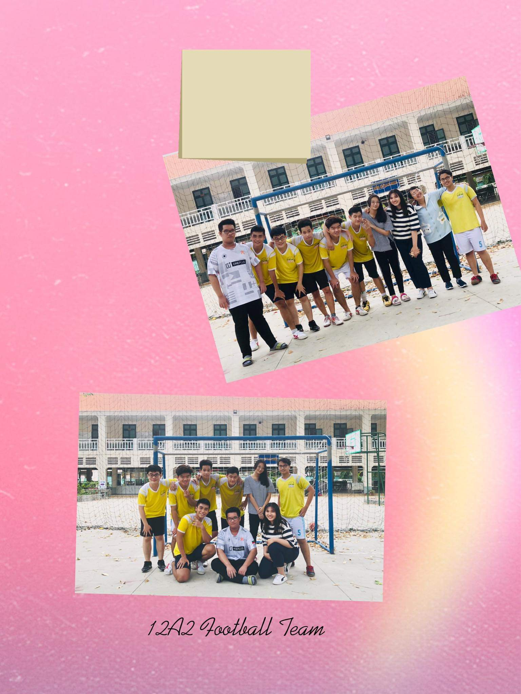
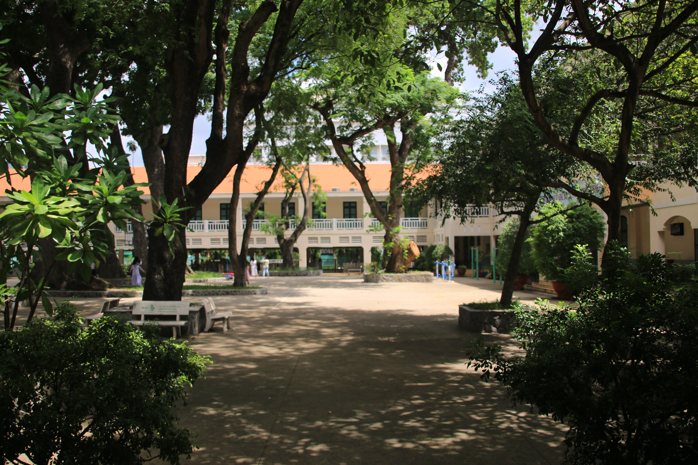

Le Quy Don high school, LQD, is the oldest high school of the South of Vietnam. It was established in 1875 during the French colonization. At LQD, we learned to be a global citizens. Our teachers trained us to have soft skills so that we may not be unprepared when we study abroad or work for an international corporation. There are about 8 activities during the school year. We may start the school year by the English festival. It is a great chance for students to sing or perform in English. My class won a third prize in my third and final year of studying. I would like to mention that in Vietnam, you will stay with the same classmates through one level of education. So, we did not win anything in the first two years. However, we won in our last year. Next, we have sport competition to celebrate Teacher's day. My class soccer team advanced to the semifinal after defeating our rivals 4-3 in the quarter final. However, we lost the semifinal match. So we shared the third place with the losing team of the other side of the bracket. Moreover, we have Spring festival, aka Tet holiday. Sadly, when I was in grade 12, after Tet holiday, Covid-19 came and destroyed my country. All the educational activities were moved to online. Therefore, we did not have a chance to finish our journey together. Last but not least, I love you guys. I love you all. Thanks for coming and coloring my childhood. I will never forget anyone of us.
 